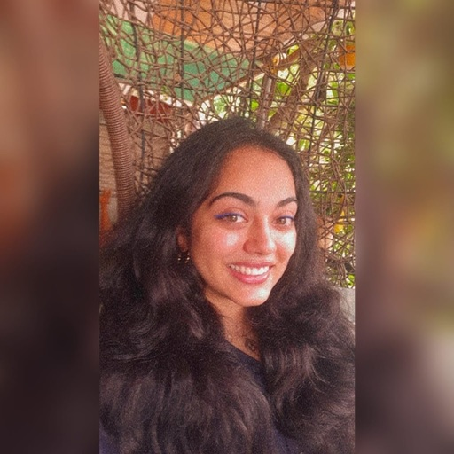
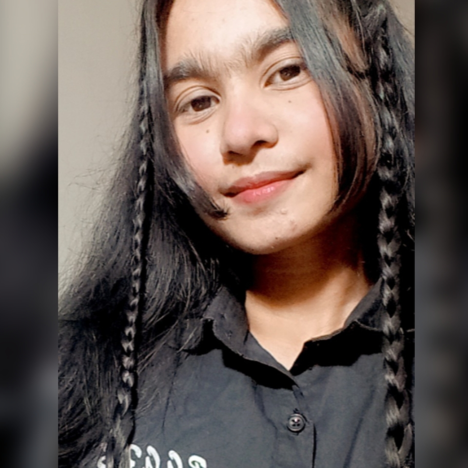

-

I'm Moksha ( She/her). I'm a year 2 IB student. In my free time, you can find me binging sitcoms or experimenting in the kitchen. Additionally, I'm a social media manager for 2 of my Nonprofit organizations and I enjoy video editing and media production. (ps. I'm a major swiftie!!)
-Moksha Betai
-

Airin is a high school senior and an incoming freshman at New York University, Abu Dhabi. She was born and raised in Bangladesh. Tech, Visual arts, 3D modeling, software development, and revolution in astronomy interests her most. She has worked on the front-end part of this website.
-Airin Haque